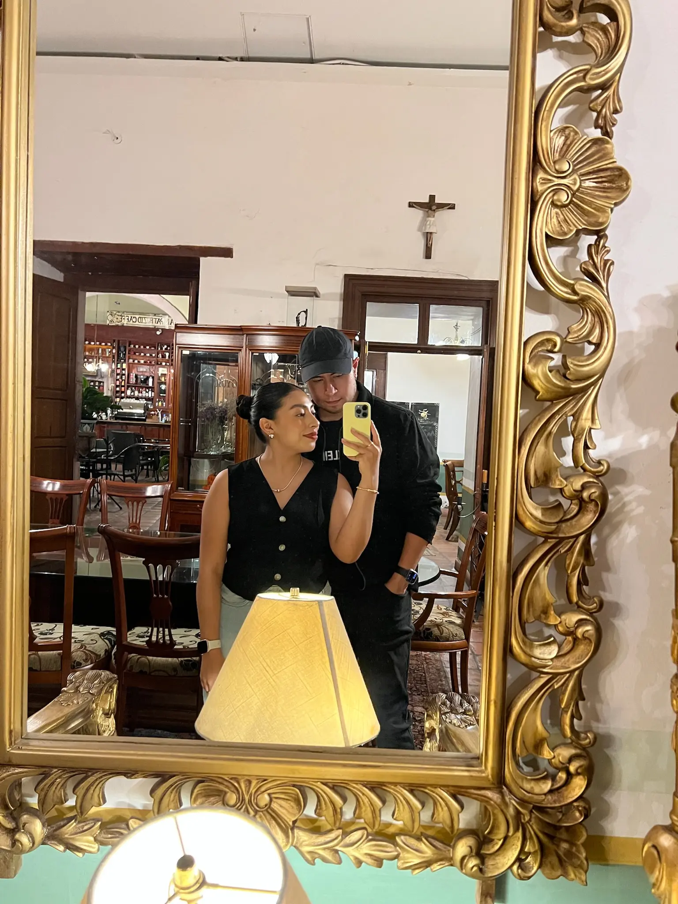
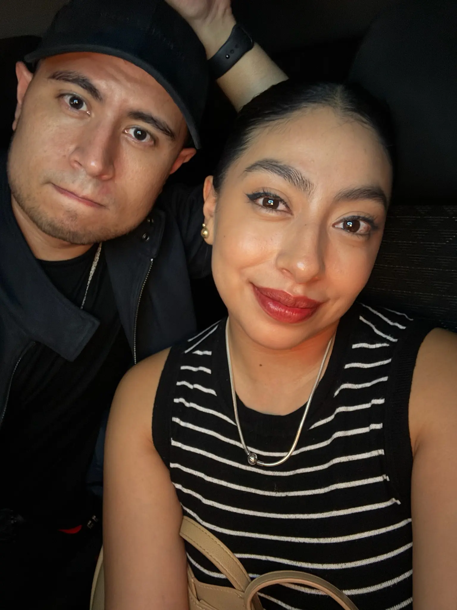

Para alguien especial
Todo comenzó
dentro del agua.
Aunque ahora, curiosamente, nadar es de lo que menos hablamos.
Esta es la historia de cómo una rutina de natación, un mensaje inesperado y muchas conversaciones comenzaron a convertirse en algo increíble.
01 · EL AGUA NOS PRESENTÓ
Una rutina de natación cambió el rumbo de mis días.
Un día subiste a Facebook la rutina que habías nadado. Me sorprendieron todos esos metros de pecho y, siendo honesto, también me pareció imposible no notar lo linda que eras.
Te escribí. Comenzamos hablando de albercas y rutinas; sin darnos cuenta, terminamos hablando de nosotros.
02 · EL PRIMER DÍA
Cuando te conocí, el tiempo simplemente desapareció.
Hablamos de nuestras vidas hasta que llegó la noche. Me gustaban tu mirada, tu sonrisa y cómo te reías de mis tonterías; yo todavía no quería que entraras a tu casa.
03 · LO QUE ADMIRO
Mientras más te conozco, más razones encuentro para admirarte.
Admiro tu inteligencia, tu resiliencia, tus ganas de salir adelante y el amor tan grande que tienes por tu familia.
04 · VOLVIMOS AL AGUA
Todo comenzó dentro del agua… y un día volvimos a ella.
Durante un tiempo nadamos en albercas diferentes. El agua nos había presentado, pero todavía nos debía un momento.
Esta vez nadamos juntos.
No hizo falta una fotografía para guardarlo. Me basta recordar que compartimos aquello con lo que comenzó toda esta historia.
05 · EN MIS DÍAS
Sin darme cuenta, comenzaste a aparecer en todos mis días.
En lo que veo, en lo que escucho y en esos pequeños momentos en los que algo me hace pensar inmediatamente en ti.
Durante mucho tiempo me pregunté si tú también pensarías en mí cuando no estábamos juntos.
Ahora sé que sí. Nos pensamos mutuamente durante todo el día.
Y entonces llegaron los recuerdos
A veces un instante pequeño dice más que muchas palabras.


Nuestras salidas al cine
Esas salidas comenzaron algo especial entre nosotros.
Por más sencillas que parecieran, se convirtieron en nuestras excusas para vernos, sentarnos cerca y abrazarnos dentro de la sala. Esos momentos todavía siguen en mi cabeza.

El día de la lluvia
Afuera llovía. Adentro, todo parecía detenido en el tiempo.
Te cargué para que no te mojaras y aquella casa antigua terminó guardando uno de nuestros días más bonitos.
Y fui yo quien terminó llevándose uno de los recuerdos más lindos.

Cada vez más cerca
Ya no solo compartimos momentos.
Poco a poco comenzamos a formar parte de los días del otro.
Compartir el camino
Hasta los trayectos se convierten en recuerdos contigo.
Porque muchas veces lo importante no es el lugar, sino ir juntos.

Al final de todo
Mi recuerdo favorito siempre somos nosotros.
Todo comenzó con una rutina de natación. Y terminó llevándome hasta ti.
Antes de terminar
Todos estos momentos me han hecho sentir algo muy especial.
Pero hay algo que no quería decirte solamente con palabras.
Quería preguntártelo de una forma diferente.
Ver lo que quiero decirte
Ábrelo desde Safari en un iPhone o iPad compatible.